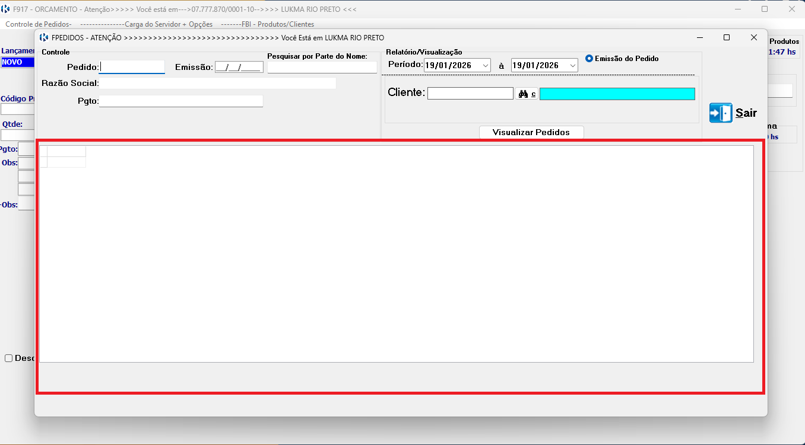

Controle de Pedido no Sistema Lukma.
Este tutorial explica como mexer no controle de pedidos no sistema
corretamente.
Passo a passo
-
Já logado no sistema Lukma, selecionar na barra superio o Controle de Pedidos

-
Você pode pesquisar sobre um pedido em especifico, cliente ou um período ou um data espeífica.
Logo a baixo te mostrara a informação do pedido.

Em caso de erro de acesso, verifique seus dados ou entre em contato
com o suporte.